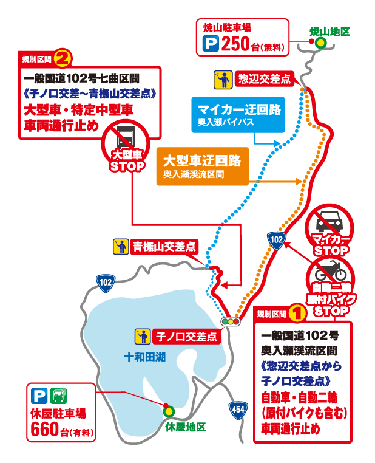

マイカー交通規制の目的・背景
誰もが等しくその恩恵を受ける権利があります。" />
しかし、その反面、観光シーズンには車が殺到して、渋滞や環境への影響を引き起こすなどの様々な問題が生じています。また、渓流沿いの国道102号は、もともと地域の生活道路や産業道路としての機能を担っていますが、渓流を迂回する道路は、大型車のすれ違いが困難な状況となっています。
これらの問題を解決するため、平成25年度より奥入瀬渓流を安全に迂回できる「青撫山バイパス」が事業化され、整備されることになりました。
わたしたち奥入瀬渓流利用適正化協議会では、これまで「自然環境保全と渋滞解消」を目的に、マイカー交通規制の試行に取り組んできましたが、今後は、本格的な車両の乗り入れ規制を見据え、規制車種や規制拡大のため、毎年の試行を継続しながら、本取り組みを進展させてまいりますので、どうぞ皆様のご理解、ご協力をお願い致します。
 |
奥入瀬渓流区間
| |
| 迂回路となっている七曲区間は、急カーブ、急勾配が連続するため、大型車のすれ違いが出来ません。このため、やむを得ず大型車両は奥入瀬渓流を通行してもよいこととしていますのでご理解をお願いします。 |